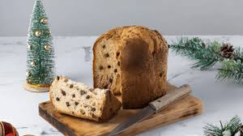

Chocotone

Ingredientes
- 1 xícara (chá) de leite com 1 ovo dentro
- 3 colheres (sopa) de manteiga
- 1 colher (café) de sal
- 6 colheres (sopa) de açúcar
- 1 colher (sopa) de essência de baunilha
- raspas de 1 laranja
- 500 g de farinha de trigo
- 1 1/2 colher (café) de fermento biológico seco
- 200 g de chocolate forneável picado
Modo de preparo
- Misturar bem todos os ingredientes.
- Sovar e deixar fermentar.
- Assar em fôrma untada, a 180º C por 25 minutos.
Observação:
Receita da máquina de pão.